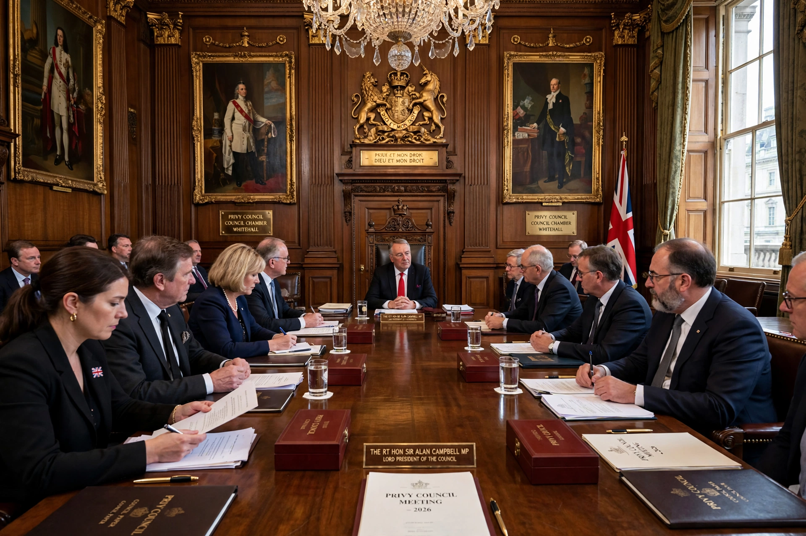

The Lord President of the Council is the presiding officer of the Privy Council of the United Kingdom and the fourth of the Great Officers of State. The holder is generally also Leader of the House of Commons or House of Lords.

Responsibilities include summoning Privy Council meetings, presenting business — including Orders in Council and royal proclamations — and oversight of certain higher-education and research matters historically attached to the office.
The office became distinct in the 16th century. Holders have often been senior cabinet figures without heavy departmental duties, allowing them to chair cabinet committees.